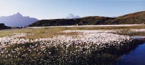
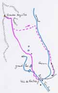

Grandes Aiguilles (2905 m)

Départ : les Veis de Nastase (2150 m)
Aller : 3,3 km, +755 m, 129 min
Retour : 4,8 km, + 10 et - 765 m, 96 min
Difficulté : EE
Période : mi juillet - septembre
Remarque : le replat des Communaux est un peu humide.
Remarque sur la route d’accès : une route très étroite monte en 14 km au départ des anciens thermes de Bonneval, elle est réservée aux conducteurs avertis. En terre à partir de 1600 m ; mais c’est au dessous de Versoye qu’elle est la plus étroite. L’alpagiste la descend vers 7 h 30.
Bibliographie : Mérel (page 173)

Remonter au mieux le ruisseau des Torches, longer le Grand Lac (sente), poursuivre en direction du sommet. Il faut gravir une pente menant de la butte 2513 à un pierrier (replat 2648), puis l’arête finale qui débute à la selle de Tête Noire.
Retour possible en descendant droit sur le sentier SR, à partir de la butte 2513. Revenir depuis les Veis de Gacon par la route d’alpage.
Photo Guy Mounier : linaigrettes au Grand Lac